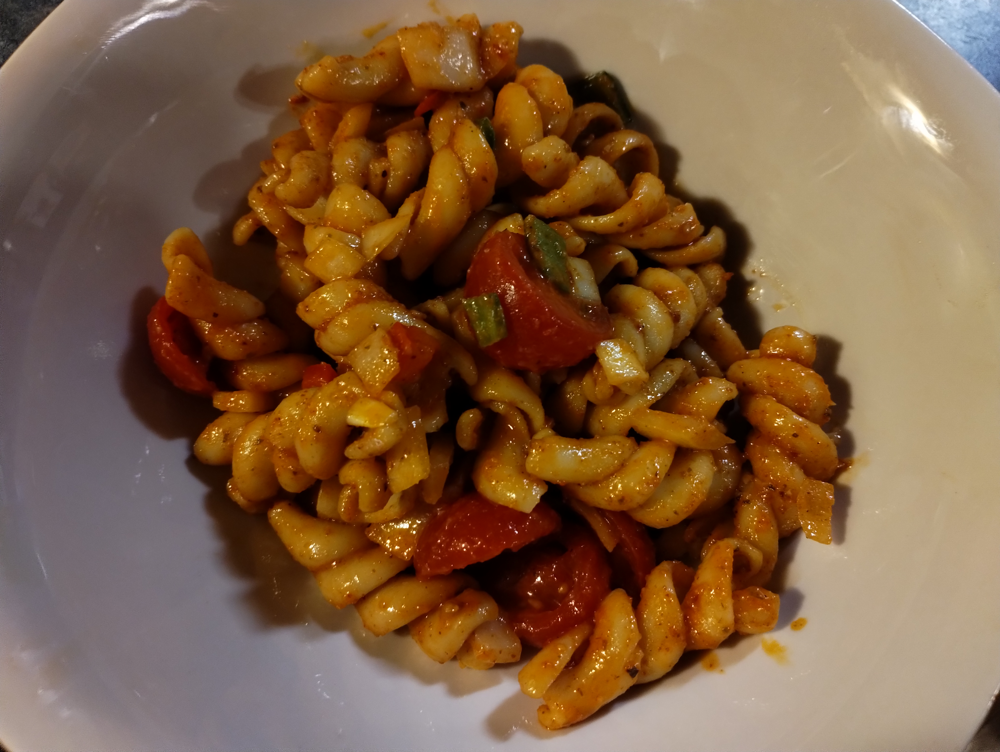

Chipotle Pasta Salad

Description
This recipe uses chili powder and chipotles in adobo to add a southwest flair that is sure to please
ingredients
- 1lb fusilli (Rao's is a great choice)
- 2-3 chipotles in adobo (add 1-2 tbsp sauce)
- 3 cloves garlic
- 1/3 cup red wine vinegar
- 2/3 cup extra virgin olive oil
- 2-3 tsp agave nectar
- 1 tbsp smoked paprika
- 1 tbsp chili powder
- 1 tsp fresh ground black pepper
- 1 poblano pepper
- 1 red bell pepper
- 1/2 onion, any kind
- 1 pint cherry tomatoes
Directions
- Boil pasta in salted water
- Put chipotles, adobo, garlic, vinegar, oil, agave, paprika, chili powder, and pepper in a blender and blend until smooth
- Roast poblano and red peppers on stove burner until well chared. Use wet paper towel to remove blackened outer layers. Roughly chop into 1/2 to 1 inch pieces
- Dice onion
- Halve cherry tomatoes
- Drain pasta and combine with sauce and vegetables, stirring to coat all ingredients evenly
Home